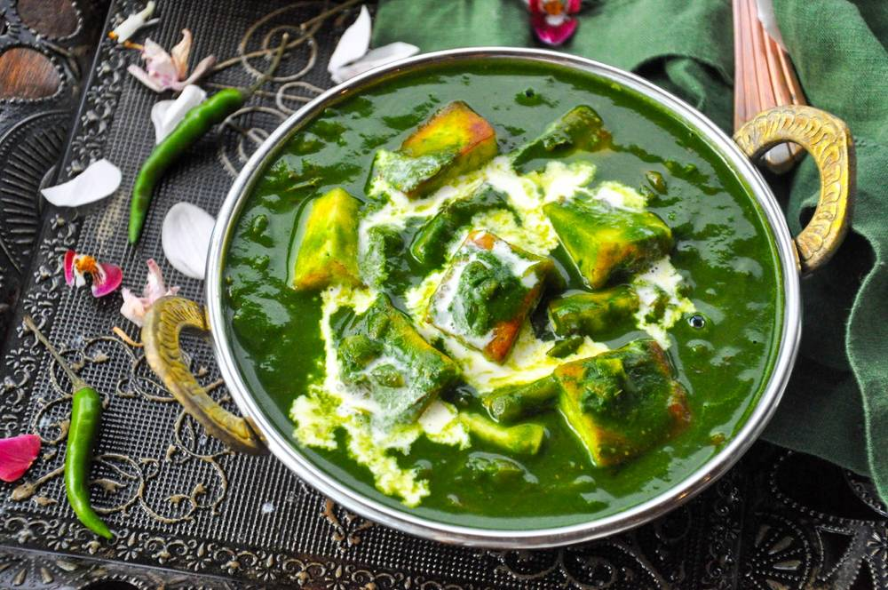

Palak Paneer

Description
Palak Paneer is a popular Indian Dish made using paneer (Indian cottage cheese) and a creamy and delicious spinach gravy.
The conventional way to make palak paneer is to blanch the spinach leaves and then pure it. This pure is later cooked with
spices, onions and tomatoes until a thick curry like consistancy is achieved.Lastly paneer is simmered into that sauce.
For a restaurant touch usually some cream is added to this.
Ingredients
- 150g paneer (Indian cottage cheese)
- 100g-120g palak (spinach)
- 2 tablespoons oil
- 2 green chilies
- 3/4 cup onions
- 1/2 cup tomatoes
- 1 teaspoon ginger garlic paste
- 3/4 teaspoon salt
- 8-10 cashewnuts
- 1/2 - 3/4 teaspoon garam masala
- 1/2 teaspoon kasturi methi
- 3 tablespoons cream
- 2 green cardamoms (optional)
- w cloves (optional)
Steps
- Pluck the young and tender spinach leaves and discard their stems. Rinse and clean the palak thoroughly, you
can also spray some vinegear and salt to remove the pesticide residue.
- Add half tablespoon oil to the pan. Then add a few chopped green chilly. Add the palak and 8-10 cashews.
- Saute on medium heat until the palak wits of completely (for 2-3 mins). Ensure the raw flavour of the leaf
has gone.
- Cool it completely, transfer to a blender jar and add 1/4 cup clean water to the blender. Blend this to
a smooth puree. It has to be thick and smooth.
- Take another pan and add 1 tablespoon of oil, 2 whole cardamoms, 2 cloves, 1/8th teaspoon of cumin seeds.
Add 3/4th cup of onions, fry until onion turns golden.
- Add finely chopped half cup of tomato and half teaspoon of salt. Saute them well. When the tomatoes turn fully
mushy, add 1/2 to 3/4 teaspoon of garam masala2. Saute till the masala blends well. Pour a bit of water and and cook
on medium heat until the onion are completely soft cooked.
- Next add the palak puree and mix it. Cook until it bubbles for about 2mins.
- Add cubed paneer
- Give a good stir, switch off the stove and add cream to it.
- Serve the delicious palak paneer with butter naan or jeera rice.